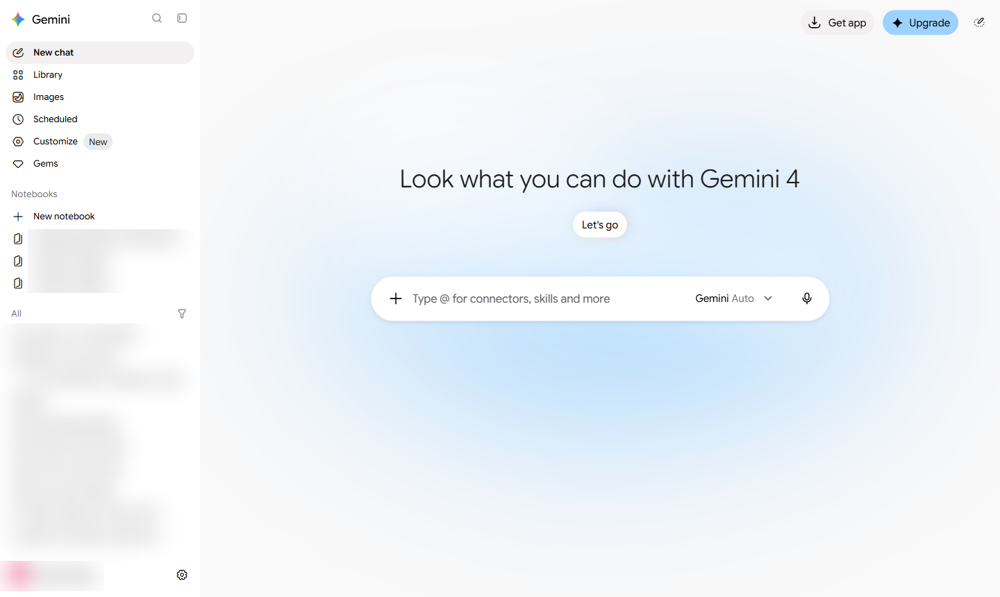
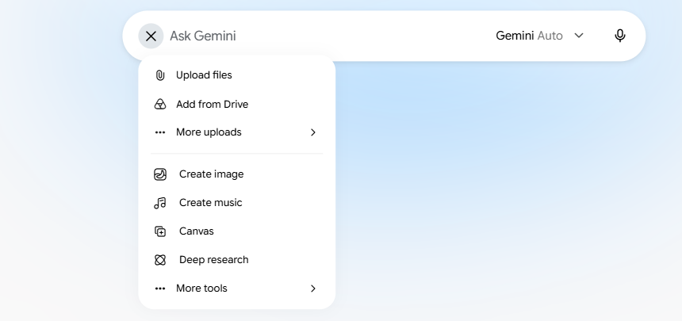
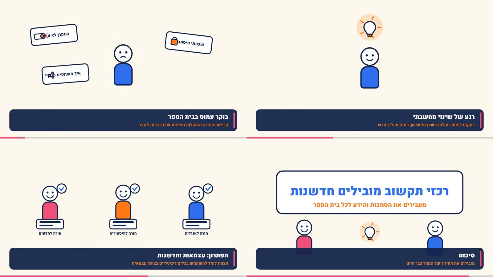
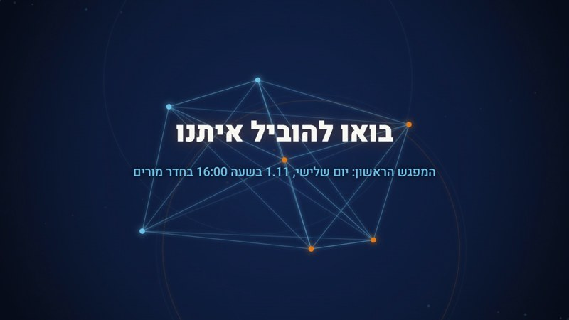

סרטון קצר, מתיאור במילים
וידאו ב-Gemini
בלי מצלמה ובלי תוכנת עריכה. כותבים מה רוצים לראות, ומתקנים בשיחה עד שזה יוצא נכון. במנוי, וגם בחינם.
סרטון, בתוך הצ'אט שאתם מכירים
יצירת הסרטונים נמצאת בתוך אפליקציית Gemini של Google, באתר ובטלפון.
1מתארים, ומקבלים סרטון
כותבים במילים מה רואים, איפה ומה קורה, ומקבלים קליפ קצר של כ-10 שניות.
2מעלים חומרים משלכם
סרטון אחד ועד 5 תמונות. ה-AI משתמש בהם כנקודת מוצא.
3מתקנים בשיחה
"תוסיף ספר על השולחן". לא מתחילים מאפס בכל פעם.
מ-19.5.2026 הסרטונים באפליקציה נוצרים במודל Gemini Omni, והגרסה העדכנית היא Gemini Omni 1.1 Flash. המודל הקודם, Veo 3.1, עדיין קיים בכלי Flow.
איך מתחילים
שלושה צעדים. הראשון הוא לוודא שיש לכם מנוי מתאים. אין מנוי? בפרק 3 יש מסלול חינמי.
נכנסים ל-gemini.google.com
מתחברים עם חשבון Google, או פותחים את אפליקציית Gemini בטלפון.
מוודאים שיש מנוי בתשלום
כל מנוי בתשלום מתאים, כולל Plus ב-19 ₪ לחודש. בחשבון חינמי האפשרות לא מופיעה.
לוחצים Create video
בסרגל הצד. נפתח מסך יצירת הסרטון, עם תיבת כתיבה ותבניות מוכנות.
לא זמין מתחת לגיל 18. תלמידים לא יוצרים סרטונים בעצמם. בכיתה, המורה מפיקה את הסרטון מהחשבון שלה ומציגה אותו. בחשבון בית ספרי צריך רישיון מתאים, כדאי לבדוק מול מנהל המערכת.
המסך הראשון של Gemini
הממשק באנגלית. שני מקומות שכדאי להכיר כבר עכשיו.
- 1
כפתור ה-+
בתיבת הכתיבה. כאן מעלים קבצים ופותחים את תפריט הכלים.
- 2
Upgrade
מכאן משדרגים למנוי. בלי מנוי בתשלום אין Create video.

בחשבון חינמי אין Create video בסרגל הצד. האפשרות נפתחת בכל מנוי בתשלום, כולל Plus. Google מעדכנת את התפריט השמאלי לעיתים קרובות, אז ייתכן שאצלכם הוא נראה קצת אחרת.
תפריט הכלים של Gemini
לוחצים על ה-+ ונפתחת רשימה: העלאת קבצים למעלה, וכלי היצירה מתחת.
- 1
פותחים את התפריט
ה-+ הופך ל-X כשהתפריט פתוח.
- 2
אזור הכלים
תמונה, מוזיקה, Canvas ו-Deep research. שימו לב ל-Canvas: איתו עושים סרטון בחינם, בפרק 3.

צילום מסך יצירת הסרטון יתווסף בהמשך. הוא דורש חשבון בתשלום, ולא נציג כאן מסך מומצא.
2
יוצרים סרטון במנוי
עם Create video: מהתיאור הראשון, דרך תיקונים בשיחה, ועד קובץ שאפשר לשלוח.
עורכים את הסרטון בשיחה
לא צריך ציר זמן ולא תוכנת עריכה. מבקשים שינוי במילים, כמו מעורך אנושי.
מעלים חומר גלם
סרטון אחד ועד 5 תמונות, כנקודת מוצא.
משנים זווית, פריטים ותאורה
מקרבים, מוסיפים או מורידים, בלי להתחיל מאפס.
ממשיכים את הסצנה
"מה קורה אחר כך?" מוסיף עוד כ-10 שניות, עם אותן דמויות. עד כ-40 שניות בסך הכול.
או מתחילים מתבנית
יש תבניות מוכנות במסך Create video.
הארכת הסצנה חדשה מאוגוסט 2026, במנויי Plus, Pro ו-Ultra. לסרטון ארוך מ-40 שניות, או כדי להוסיף כותרות, עוברים לתוכנת עריכה.
ההנחיה שנותנת סרטון טוב
פרומפט הוא ההוראה שכותבים ל-AI. ארבעה רכיבים הופכים תיאור כללי לסרטון מדויק.
נושא
מה רואים? "לוח גיר", "תא בגוף האדם", "שולחן בחדר מורים".
הקשר
איפה זה קורה? "בכיתה", "במעבדה", "בחצר בית הספר".
פעולה
מה קורה? "חצים זזים", "תאים מתחלקים", "דלת נפתחת".
סגנון
איך זה נראה? "אנימציה", "דוקומנטרי", "צילום קולנועי".
Gemini מבין עברית, ומהניסיון שלנו לסרטונים מומלץ לכתוב את ההנחיה באנגלית. כותבים בעברית ומבקשים מ-Gemini לתרגם, או מעתיקים מכאן.
עוד שתי הנחיות מוכנות
לוחצים "העתקה", ומדביקים בתיבת הכתיבה של Create video (Ctrl+V).
"בלי טקסט על המסך" זו בקשה מכוונת. כתב בתוך סרטון של AI יוצא לא פעם משובש. את הכותרות והכתוביות מוסיפים אחר כך, בתוכנת עריכה.
באפליקציה, או ב-Flow?
ל-Google יש שני מקומות ליצירת סרטונים. לרוב הצוותים האפליקציה מספיקה.
Gemini
- בתוך הצ'אט, עם ממשק שעובד גם בעברית
- המודל Gemini Omni 1.1 Flash, עריכה בשיחה
- קליפ של כ-10 שניות, ואפשר להמשיך את הסצנה עד כ-40
- נפתח בכל מנוי בתשלום, כולל Plus
Flow
- כלי נפרד ב-flow.google.com, לעבודה מתקדמת יותר
- גם Veo 3.1 וגם Gemini Omni, לפי קרדיטים
- איכות 4K בעיקר במנוי Ultra, כדאי לבדוק
- תנאי הגישה בלי מנוי לא אחידים, כדאי לבדוק
לכלי Flow יש הדרכה נפרדת בסדרה. כאן מתמקדים במה שכבר נמצא אצלכם באפליקציה.
כל סרטון מסומן, גם אם לא רואים
Google מטמיעה בכל סרטון שנוצר באפליקציה סימן מים בלתי נראה בשם SynthID.
בודקים בעצמכם
מעלים קובץ ל-Gemini ושואלים אם הוא נוצר ב-AI של Google.
שיעור באוריינות מדיה
מראים לתלמידים סרטון שיצרתם ושואלים: אמיתי או AI? איך אפשר לדעת?
שקיפות מול הקהל
בצוות ומול הורים כותבים ליד הסרטון "נוצר בעזרת AI". זה בונה אמון.
סימן מים הוא לא הוכחה הפוכה. סרטון בלי SynthID עדיין יכול להיות מזויף, כי כלים אחרים לא מסמנים. זה המסר לתלמידים: בודקים מקור, לא רק מראה.
דמות דיגיטלית שנראית ונשמעת כמוכם
אפשר ליצור אווטאר אישי, ולקרוא לו בהנחיה עם @ ושם המשתמש שלכם. רק אתם יכולים להשתמש באווטאר שלכם.
מתי זה שימושי
הודעת פתיחה לשנה, הסבר קצר לנוהל חדש, או ברכה לצוות, כשאין זמן לצלם.
רק אתם, ורק בהסכמה
לא משתמשים בקול או בפנים של אדם אחר, ובטח לא של תלמידים, בלי הסכמה מפורשת שלו.
מסמנים שזה AI
אומרים לקהל שהסרטון נוצר בעזרת AI, גם כשהדמות היא אתם.
שומרים על תוכן רשמי
לא מקליטים הבטחות או החלטות שלא אושרו. מי ששומע יאמין שאמרתם.
הצ'אט מתכנן, הסרטון נוצר
את התכנון, התסריט וההנחיה באנגלית מכינים קודם בצ'אט. ככה הסרטון יוצא נכון כבר בפעם הראשונה.
1כל צ'אט מתאים
ChatGPT, Claude או Gemini: "תכתוב לי 3 הנחיות באנגלית לסרטונים שפותחים שיעור על מחזור המים".
2מדביקים ב-Create video
ב-Gemini זה באותו חשבון. לא צריך להעביר קבצים בין כלים.
3מחברים וכותבים כתוביות
כמה קליפים וכתוביות בעברית מחברים בתוכנת עריכה כמו CapCut.
ה-AI חוסך את הצילום, לא את העריכה. מי שמתכנן בצ'אט מבזבז פחות ניסיונות על הסרטון עצמו.
3
סרטון בחינם עם Canvas
בלי מנוי: Gemini כותב סצנה מונפשת, ואתם מורידים אותה כקובץ וידאו.
Gemini כותב את הסרטון בקוד
בחשבון חינמי אין Create video, אבל יש Canvas. הוא בונה אנימציה עם כפתור "הורד סרטון".
מה מקבלים
אנימציה של צורות, טקסט ודמויות פשוטות, בגודל 1280 על 720. לא צילום מציאותי.
מה צריך
חשבון Google רגיל, אישי או של החינוך. המודל המהיר, Flash, מספיק.
מה יוצא
קובץ MP4 שמורידים מתוך Canvas, ושולחים או מקרינים.

זה לא אותו מודל וידאו כמו במנוי. זה סרטון "מצויר", ומתאים להזמנות, להודעות ולהסברים קצרים.
שישה צעדים, מההנחיה ועד הקובץ
אותו Gemini ואותו חשבון. רק בוחרים כלי אחר בתפריט ה-+.
פותחים Canvas
ב-gemini.google.com לוחצים + ובוחרים Canvas. המודל: Flash.
מדביקים הנחיה עם כרטיס סגנון
את זו שבשקף הבא. מחליפים רק את הנושא.
מחכים שהסצנה תיבנה
נפתחת תצוגה עם האנימציה, כפתור "נגן מההתחלה" וכפתור "הורד סרטון".
מתקנים בשיחה
"תאט את הסצנה השנייה", "תגדיל את הכותרת". לא מתחילים מאפס.
לוחצים "הורד סרטון"
הלשונית נשארת פתוחה מלפנים עד שההקלטה נגמרת.
בודקים לפני ששולחים
תאריכים, שמות ואיות. כל מקום שכתוב בו [להשלים] ממלאים בעצמכם.
הכפתור מקליט את האנימציה ושומר קובץ. ההנחיה מבקשת קודם MP4, כדי שהקובץ ייפתח בכל טלפון ומחשב.
הנחיה מוכנה, עם כרטיס סגנון
כרטיס הסגנון קובע איך הסרטון ייראה, ובלעדיו התוצאה כללית בהרבה. מחליפים רק את הנושא.
הנושא
את זה מחליפים: תזכורת לטקס, הסבר לנוהל, פתיחה לשיעור.
כרטיס הסגנון
לא משנים. צבעים, גופן ותנועה קבועים, וכל סרטון יוצא באותו מראה.
"[להשלים]"
הכלל שמונע מ-Gemini להמציא מועד או שם.
ארבע תקלות שכדאי להכיר מראש
פגשנו את כולן בניסוי שלנו, ולכל אחת יש פתרון פשוט.
"משהו השתבש"
הגרסה הראשונה נכשלה? לוחצים "תיקון השגיאה". אצלנו סבב אחד הספיק.
"אני רק מודל שפה"
לוחצים "נסה שוב". התשובה מגיעה אחרי כ-2 דקות.
ההקלטה נעצרה
לשונית ברקע עוצרת את ההקלטה. משאירים אותה מלפנים עד הסוף.
פרטים שהומצאו
תאריך או שם שלא כתבתם. מוסיפים להנחיה את הכלל [להשלים], ובודקים לפני ששולחים.

4
מתי כן, ומתי לא
בלי הבטחות: מה מעולה, מה מוגבל, ומה עושים עם זה.
מה מעולה, ומה כדאי לדעת מראש
מתי כן
- פתיחה קצרה לשיעור, לכנס או לישיבה
- המחשה של משהו שאי אפשר לצלם: תא, ירח, אירוע היסטורי
- הזמנה או תזכורת מונפשת, גם בלי מנוי
- רוצים לתקן במילים, בלי ללמוד תוכנת עריכה
- שיעור על זיהוי סרטוני AI
מתי לא, ומה עושים
- אין Create video בחשבון חינמימנוי החל מ-Plus, או סרטון מצויר ב-Canvas
- לא זמין מתחת לגיל 18המורה מפיקה ומציגה, התלמידים לא נכנסים
- קליפ של כ-10 שניותממשיכים את הסצנה עד כ-40, ומעבר לזה עורכים
- טקסט בתוך הסרטון יוצא משובשמבקשים no text, ומוסיפים כתוביות אחר כך
ומה עם Sora של OpenAI? החברה הודיעה על סגירתו ב-24.3.2026. האפליקציה נסגרה ב-26.4.2026, והגישה למפתחים ב-24.9.2026.
כמה זה עולה
מנויי Google AI בישראל, לחודש. כל מנוי בתשלום פותח יצירת סרטונים.
Free
צ'אט, תמונות ומחקר, וגם Canvas לסרטון מצויר. בלי Create video.
Plus
הזול ביותר שפותח Create video. 400GB. סטודנטים זכאים מגיל 18 מקבלים שנה בחינם, למימוש עד 31.12.2026.
Pro
כולל 5TB אחסון ויותר שימוש.
Ultra
10,000 קרדיטים ב-Flow, או 25,000 במסלול של 749.90 ₪.
בחשבון בית ספרי צריך רישיון Workspace מתאים, ובכל מקרה רק מגיל 18. המחירים משתנים, ולפני החלטה בודקים ב-gemini.google/il/subscriptions.
רגע, זה בדיוק אני
שלושה מצבים שכולנו מכירים, ואיך פותרים אותם בכמה דקות.
מחר שיעור על מערכת השמש
התלמידים לא מצליחים לדמיין ליקוי חמה. קליפ קצר מראה את זה, ופותח את השיעור בשאלה.
בערך 5 דקות
ישיבת פתיחת שנה
במקום שקף "ברוכים הבאים", קליפ פתיחה של בית הספר בזריחה. ההנהלה מתחילה מרגע של השראה.
בערך 10 דקות
תזכורת להורים על האסיפה
המזכירות מכינה ב-Canvas סרטון מצויר, בלי מנוי, וממלאת בעצמה את המועד במקום שכתוב [להשלים].
בערך 10 דקות
למי זה מתאים
לכל מי שרוצה להראות משהו, ולא רק לספר עליו.
הוראה
פתיחות לשיעור, המחשה של תהליכים במדעים ובהיסטוריה, ושיעור באוריינות מדיה.
ניהול
קליפ פתיחה לישיבה או לכנס, הודעה קצרה לצוות, וסרטון שמציג את חזון השנה.
מזכירות וצוות
הזמנות ותזכורות להורים, סרטונים לאירועים ולרשתות של בית הספר.
שימוש אישי
ברכה מונפשת ליום הולדת, הזמנה לאירוע משפחתי, או סרטון קצר מתמונות מהטיול.
שישה טיפים שלא כתובים במדריכים
ההנחיה באנגלית
ל-Create video אנגלית עובדת טוב יותר. בקשו מהצ'אט לתרגם.
ארבעה רכיבים
נושא, הקשר, פעולה וסגנון. תיאור של מילה אחת נותן סרטון כללי.
כרטיס סגנון קבוע
ב-Canvas שומרים כרטיס אחד, וכל הסרטונים של בית הספר נראים אותו דבר.
מתקנים, לא מתחילים מחדש
שינוי קטן מבקשים בשיחה: זווית, פריט, תאורה. ככה שומרים על מה שעבד.
מסמנים "נוצר ב-AI"
כל סרטון שמוצג לתלמידים, להורים או לצוות. שקיפות בונה אמון.
אנשים אמיתיים, רק בהסכמה
לא מעלים תמונות של תלמידים, ולא משתמשים בקול או בפנים של מישהו אחר בלי אישור.
שאלות שכולם שואלים
לוחצים על שאלה כדי לפתוח את התשובה.
לא רואה Create video. למה?
כנראה שהחשבון חינמי. האפשרות נפתחת בכל מנוי בתשלום, כולל Plus. בחשבון בית ספרי צריך רישיון מתאים.
אין לי מנוי. יש דרך בחינם?
כן. ב-Canvas של Gemini מקבלים סרטון מצויר עם כפתור הורדה. זה לא צילום מציאותי, אבל מתאים להזמנות ולהסברים.
התלמידים יכולים להשתמש בזה?
ב-Create video לא, הוא לא זמין מתחת לגיל 18. המורה יוצרת את הסרטון ומציגה אותו בכיתה.
כמה זמן הסרטון?
כ-10 שניות לקליפ. במנויי Plus, Pro ו-Ultra אפשר להמשיך את הסצנה עד כ-40 שניות. לסרטון ארוך יותר עוברים לתוכנת עריכה.
מה זה Veo ומה זה Omni?
שני מודלים של Google. באפליקציה עובדים היום עם Gemini Omni 1.1 Flash. את Veo 3.1 מוצאים בכלי Flow.
איך יודעים שסרטון נוצר ב-AI?
בסרטונים של Google יש סימן מים בשם SynthID, ואפשר לשאול את Gemini על קובץ. אבל לא כל כלי מסמן, ולכן בודקים גם את המקור.
בדקו את עצמכם
שלוש שאלות. נסו לענות בקול לפני שפותחים.
מה צריך כדי לראות את Create video?
מנוי Google AI בתשלום, החל מ-Plus ב-19 ₪, וגיל 18 ומעלה. בלי מנוי עובדים עם Canvas.
מה מונע מ-Gemini להמציא תאריך בסרטון של Canvas?
הכלל [להשלים] בהנחיה, ובדיקה של כל פרט לפני ששולחים.
הסרטון יצא כמעט טוב, אבל הזווית לא נכונה. מה עושים?
לא מתחילים מחדש. מבקשים בשיחה: "תקרבו את המצלמה" או "תצלמו מלמעלה".
5
עכשיו אתם
לא צופים, עושים. מי שיש לו מנוי עובד עם Create video, וכל השאר עם Canvas.
סרטון ראשון, ב-5 דקות
בוחרים מסלול
יש מנוי: Create video בסרגל הצד. אין מנוי: + ואז Canvas.
מדביקים הנחיה
אחת מההנחיות במצגת, או כותבים משלכם.
מבקשים תיקון אחד
זווית אחרת, פריט נוסף, או סצנה איטית יותר.
מורידים את הקובץ
ב-Canvas: "הורד סרטון", והלשונית נשארת מלפנים.
בודקים ומשתפים
שולחים לקבוצת הצוות, עם הכיתוב "נוצר ב-AI".
בסוף חמש הדקות יש לכל אחד סרטון קצר אחד, ותיקון אחד שנעשה בשיחה.
שלושה דברים לזכור
שני מסלולים
Create video במנוי, מגיל 18. Canvas בחינם, לסרטון מצויר.
הנחיה טובה, תיקון בשיחה
נושא, הקשר, פעולה וסגנון, או כרטיס סגנון. ואחר כך משפרים במילים.
אומרים שזה AI
בודקים כל פרט לפני ששולחים, ולא משתמשים באנשים אמיתיים בלי הסכמה.
נסו עוד היום
הכינו סרטון אחד, ושלחו אותו למישהו מהצוות.
נכנסים היום
ב-gemini.google.com. בלי מנוי, מתחילים ב-Canvas.
אתגר של 5 דקות
הנחיה, תיקון אחד בשיחה, וכיתוב "נוצר ב-AI". רוצים משוב? שלחו לנו.